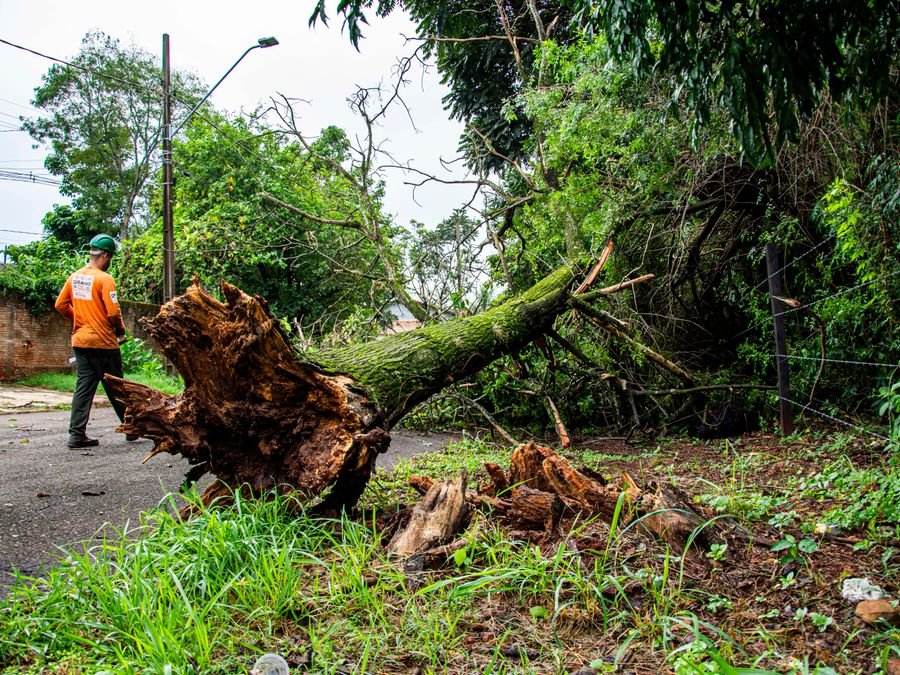

Emergency & Storm Tree Removal in Savannah, GA
A tree down on your house, car, or driveway doesn't wait for business hours – neither do we when Chatham County gets hit hard.
Fast response when a storm brings a tree down
Hurricane season and sudden summer storms bring limbs and whole trees down fast across Savannah and Chatham County. When it happens on your property, you need someone who can respond quickly, work safely around damaged structures and downed power lines, and get your yard or driveway clear again – not a voicemail that gets returned next week.

Replace: images/storm-tree-removal-savannah.jpg (900×675px)If any of this sounds familiar
Tree on your house or roof
A tree resting on a structure needs careful, controlled removal – not a rushed cut that lets it shift and cause more damage.
Tree blocking your driveway or a road
Can't get your car out, or a shared road is blocked – we clear it so you're not stuck waiting.
Leaning tree after a storm
A tree that shifted or partially uprooted in high wind can still come down the rest of the way – worth an urgent look.
Downed limbs near power lines
If a line is involved, call Georgia Power first – we handle the tree once the line is confirmed safe.
Real equipment, storm-ready response
We'll give you a straight answer on timing and price before anything starts.
- Priority scheduling for storm and emergency calls during hurricane season and after major weather events.
- Careful, controlled takedown even in unstable post-storm conditions – we don't rush a job that's already unsafe.
- We coordinate around downed power lines and never touch a line ourselves – that's the utility company's job.
- Full cleanup and haul-away so your property isn't left with logs and debris after the storm.
Is emergency tree removal more expensive?
Often, yes – after-hours and storm-emergency calls typically cost more than a scheduled removal because it means prioritizing your job and working around damaged, sometimes unsafe conditions. The exact number still depends on the tree's size, how it's positioned, and what it's resting against. We confirm the price before any work begins, storm or not.
Emergency & storm removal – common questions
Do you offer 24/7 emergency tree removal?
Storm damage doesn't wait for regular hours, so we prioritize emergency calls for trees down on a home, car, driveway, or blocking a road. Call us and we'll give you an honest answer on how quickly we can get there.
A tree fell on a power line – what should I do?
Stay well away from it and call the utility company first if a downed line is involved – that's not something a tree crew should touch. Once the line is confirmed safe or de-energized, we can safely remove the tree.
Is emergency removal more expensive than a regular job?
After-hours and storm-emergency calls typically cost more than a scheduled removal, since it means prioritizing your job and often working around difficult conditions. We'll always confirm the price before we start – no surprise invoice.
Do you serve my neighborhood?
We cover Savannah and the surrounding Chatham County area, including Pooler, Richmond Hill, Wilmington Island, Skidaway Island, Georgetown, Isle of Hope, and the Historic District. If you're just outside these, reach out and we'll confirm.
Storm response across Savannah & Chatham County
Tree down right now?
Call us directly – it's faster than a form when it's urgent.